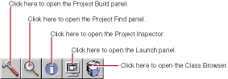

PATH
Documentation > WebObjects 4.5 >
Tools and Techniques
Building Your Application
You must build your application if your project contains any compiled code (Java or Objective-C). If your application uses WebScript only (and you do not modify any web server resources), you do not need to build. In this case, Project Builder runs a default executable (WODefaultApp
) when you launch your application.
Once you have built your application, you do not need to rebuild unless you have made changes to your compiled code. You can make changes to your components (the .html
, .wod
, or .wos
files) and test them without rebuilding.
For more information on how to build and run your application quickly, see
Rapid Turnaround Mode
.
Project Builder has a toolbar with buttons you use to build and launch your application.

-
Click
 in the toolbar to open the Project Build panel.
in the toolbar to open the Project Build panel.
-
Click
in the Project Build panel to build your project.
The Project Build panel displays the commands that are being executed to build your project. If all goes well, it displays the status message "Project Name - Build succeeded"
© 1999 Apple Computer, Inc. – (Last Updated July 27 99)